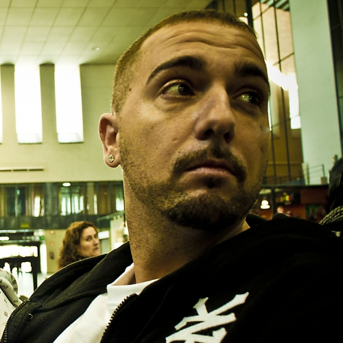

Logo
Integrantes
Zatu
Accion Sanchez
Historia
SFDK es un grupo de hip hop sevillano formado por Zatu (Saturnino Rey, MC) y Acción Sánchez (Óscar Sánchez, DJ).1
Inicios
El grupo nace a principios de la década de los 90, en el instituto donde estudiaba Zatu. Junto a varios amigos formaron el grupo Straight From Da Kranny (SFDK), traducido al español como "Directamente desde el rincón (o escondrijo)". Dicho nombre hace referencia al lugar en el que se reunía el grupo. Este derivó y pasó a ser "Siempre Fuertes De Konciencia".
En 1993 Zatu grabó una maqueta titulada Outta Kranny. Un año más tarde Acción Sánchez ingresa en el grupo y en 1995 graban otra maqueta "Tras mil vueltas". Dicho trabajo contó con la ayuda musical de DPC&K (más tarde HIPPALY). Dicha maqueta fue presentada en conciertos en la ciudad de Sevilla.
A la vez que el grupo redujo sus componentes a los actuales Zatu y Acción Sánchez, cambiaron el significado de sus siglas a "Siempre Fuertes de Konciencia". Con esta formación lanzaron en 1996 su tercera maqueta titulada Esto va en serio, contando de nuevo el apoyo de DPC&K a nivel producción musical. Esta maqueta contó con serigrafiado propio. Se llegaron a vender 800 copias por toda España. Con ella dieron sus primeros conciertos fuera de Andalucía, en lugares como Alicante, Barcelona o Albacete.
Llámalo como lo quieras
En 1997 se crea el primer sello discográfico especializado en música rap en Sevilla, Zeroporsiento. La primera referencia publicada por este sello fue el primer sencillo de SFDK en formato profesional: "Llámalo como lo quieras" en 1997.
Siempre Fuertes
A raíz de su maxi "Llámalo como lo quieras", la discográfica Zona Bruta les propone pasar a formar parte de sus filas. Con ella SFDK publicó su primer LP en el año 1999. Su título, "Siempre fuertes", hace alusión directa al actual significado de la siglas del grupo, desligándose en cierto modo de los anteriores componentes. Aunque el grueso del trabajo en cuanto a beats fue asumido por Acción Sánchez, contaron también con un apoyo importante por parte de Frank-T. Musicalmente el disco seguía las pautas ya vistas en su Maxi "Llámalo como lo quieras". Con temáticas sobre exaltación del ego del artista y bases musicales oscuras.
Odisea en el lodo
En 2003 editan "2001 Odisea en el lodo" y entran en las filas de Wild Punk famosa agencia de mánager andaluza. Tras vender unas 12 000 copias, comienzan una extensa gira por toda la península ibérica. A su vez, realizaron actuaciones en México, Chile, y Los Ángeles en el festival de música latina, LAMC (Latin Alternative Music Conference). El disco incluye temas reconocidos del grupo como ¿Dónde está Wifly? o El liricista en el tejado.
Otros trabajos
- 2005
- Los veteranos
- Siempre fuertes 2
- Lista de invitados
- Sin miedo a vivir
- Redención